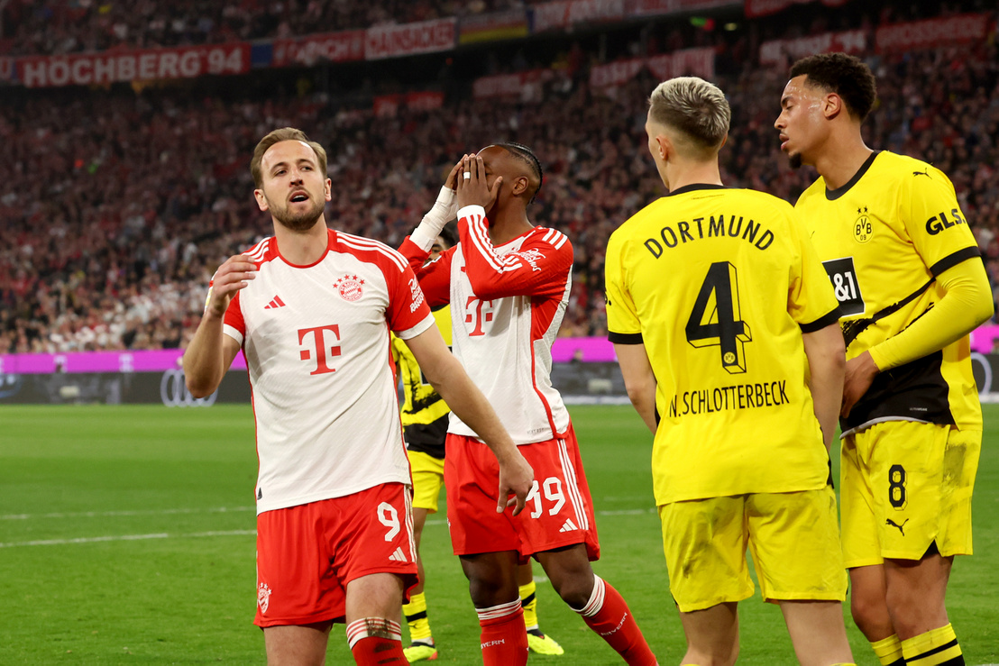

Bevezetés
A Bundesliga a német labdarúgás legmagasabb osztálya, mely Európa egyik legnépszerűbb és legizgalmasabb bajnokságaként tartja magát. A 2022/23-as szezonban ismét a meglepetések és a feszültség jegyében zajlott, miközben a hagyományos erőviszonyok ismét kihívásokkal néztek szembe. A versenyfutás a bajnoki címért és az európai kupaindulásért mindig intenzív, és minden évben új történetekkel és fordulatokkal szolgál a futball rajongóinak.
2022/2023 szezon

A 2022/2023-as Bundesliga-szezonban rengeteg izgalmas esemény zajlott a német labdarúgás legmagasabb osztályában. Az FC Bayern München hosszú ideje uralkodó csapatként lépett pályára, de a Borussia Dortmund és más nagy csapatok is komoly kihívást jelentettek számukra. A címvédő Bayern nagy lendülettel kezdte a szezont, de a Dortmund folyamatosan nyomást gyakorolt rájuk. A két csapat közötti rangadók mindig izgalmasak és fordulatosak voltak, és a végső győztes csak az utolsó fordulóban dőlt el.